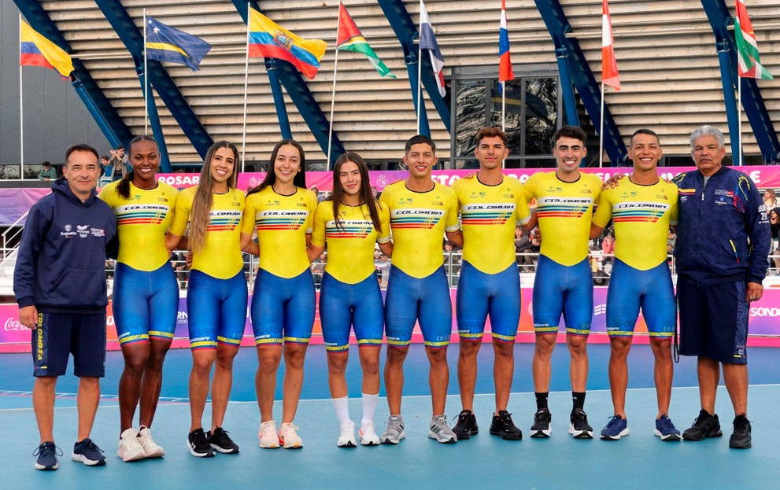
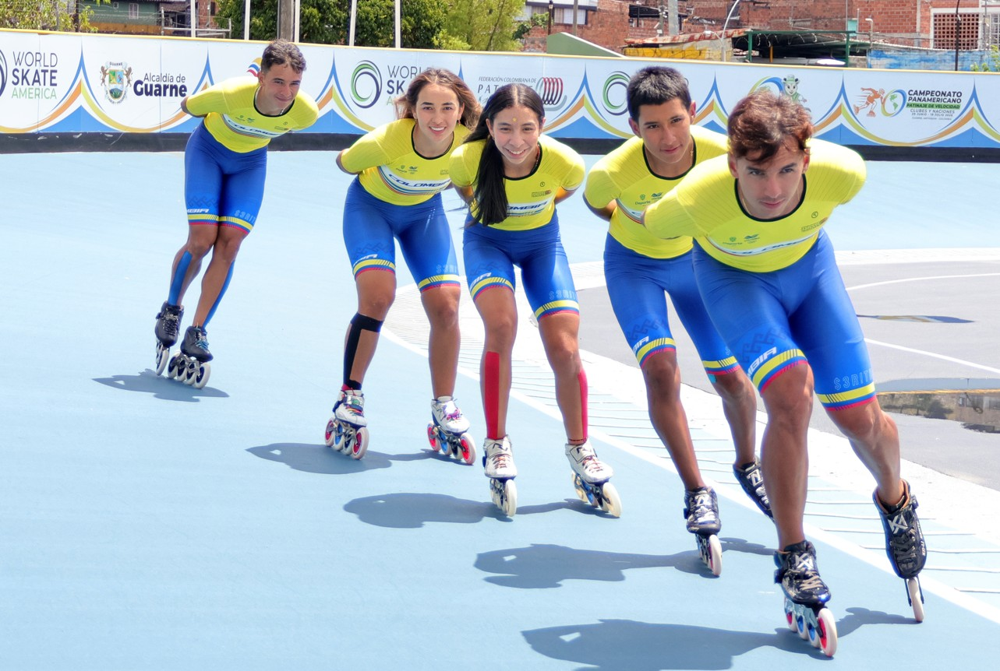
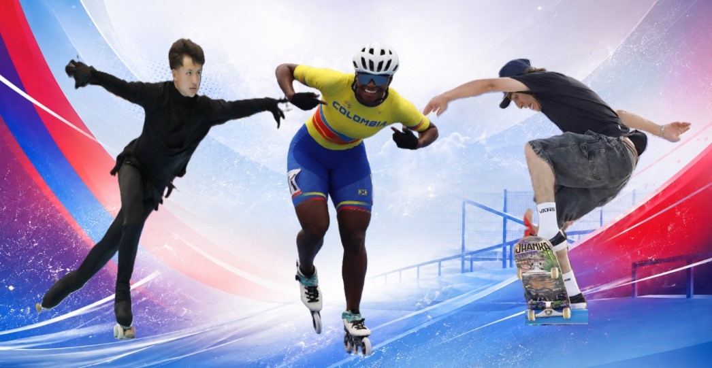
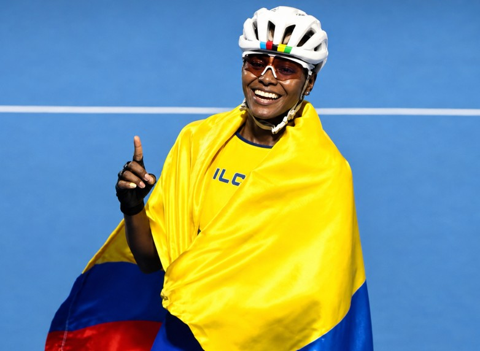
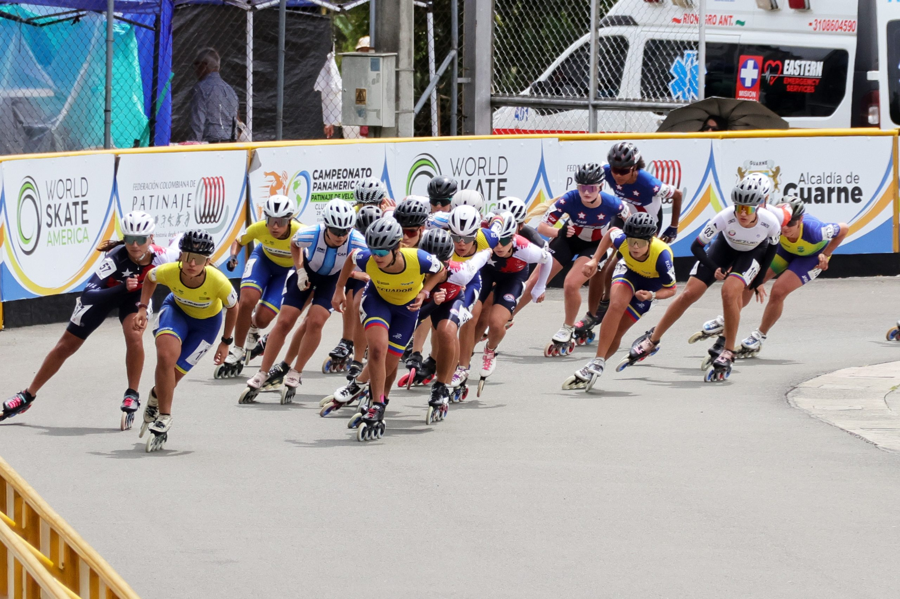
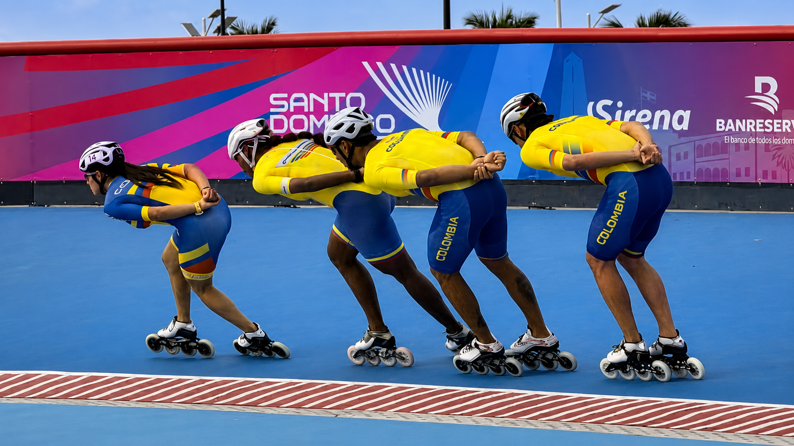

Noticias
Somos tu punto de encuentro para todo lo relacionado con el patinaje. Te contamos lo último de las competencias, te presentamos a los talentos que están rompiendo récords y te mantenemos al día con los eventos que no te puedes perder. Si el patinaje es lo tuyo, aquí estás en casa.
Últimas Noticias & Novedades

EL PATINAJE DE VELOCIDAD SE LUCIÓ EN SURAMERICANOS 2026
El patinaje de velocidad colombiano cerró con un balance más que positivo su participación en los Juegos Suramericanos Santa Fe 2026, luego de conquistar un total de 14 medallas

LISTA LA SELECCIÓN COLOMBIA DE PATINAJE DE VELOCIDAD 2026
Con los últimos doce deportistas clasificados en el Campamento Nacional Selectivo, realizado en Guarne, Antioquia, quedó conformada la Selección Colombia de Patinaje de Velocidad 2026

EL PATINAJE LE CUMPLIÓ AL PAÍS EN SANTO DOMINGO
El patinaje colombiano volvió a demostrar por qué es una de las grandes potencias deportivas del país. En los Juegos Centroamericanos y del Caribe Santo Domingo 2026

¡GRAND SLAM DE VELOCIDAD! CUATRO DE CUATRO OROS
Lo realizado por los colombianos durante la cuarta jornada del patinaje de velocidad en los Juegos Centroamericanos y del Caribe Santo Domingo 2026 fue, en términos beisboleros, un auténtico Grand Slam

EL PANAMERICANO DE LA UNIDAD PARA SEGUIR CRECIENDO
Finalizó el Campeonato Panamericano de patinaje de velocidad clubes y naciones Guarne 2026 y, sin dudas, ha sido uno de los mejores eventos continentales de todos los tiempos

EL TURNO ES PARA LA VELOCIDAD
Este martes 28 de julio entrará en competencia el patinaje de velocidad en los Juegos Centroamericanos y del Caribe Santo Domingo 2026